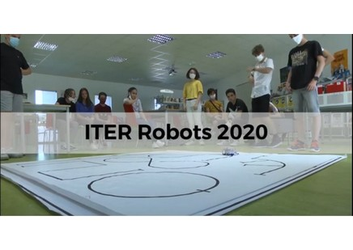

Home
Partie Robotique
(Noïm, Louka, Lilian, Naïs, Ouvéa)
Dates du concours
Parcours à télécharger
Groupe : "Robotique" sur Chamilo
Programmes :
Suiveur de ligne :
Suiveur de ligne et compteur (Version 1)
